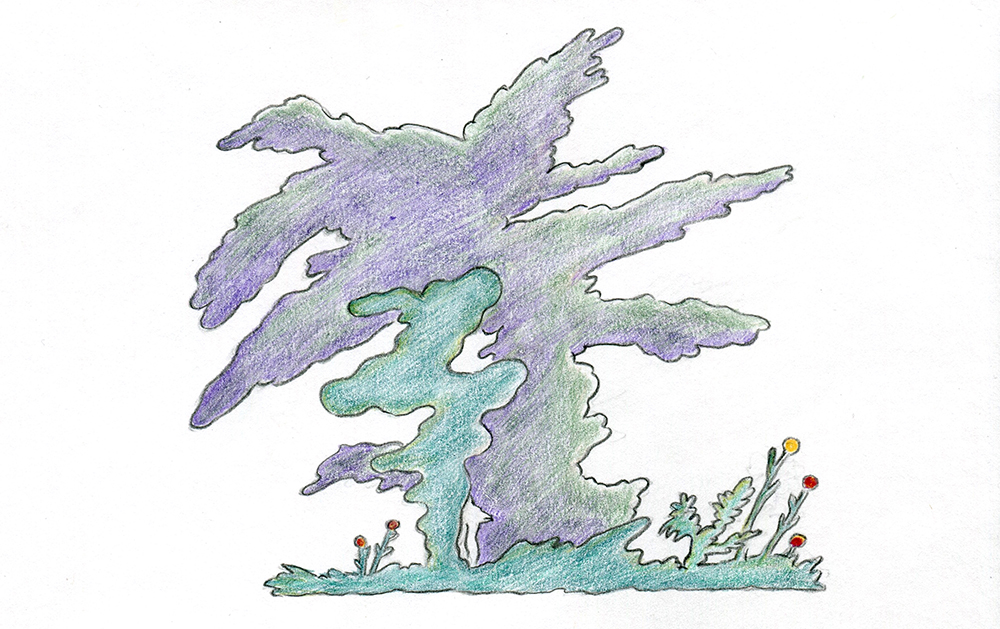
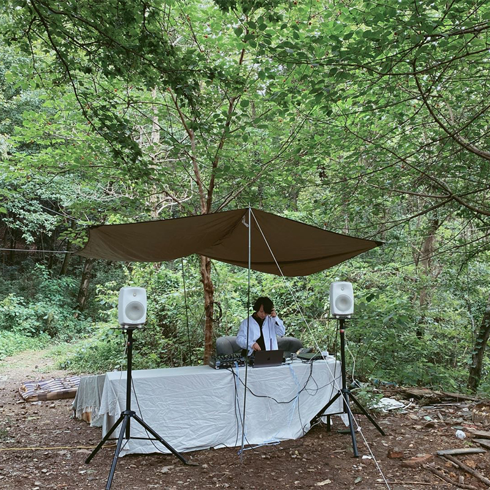
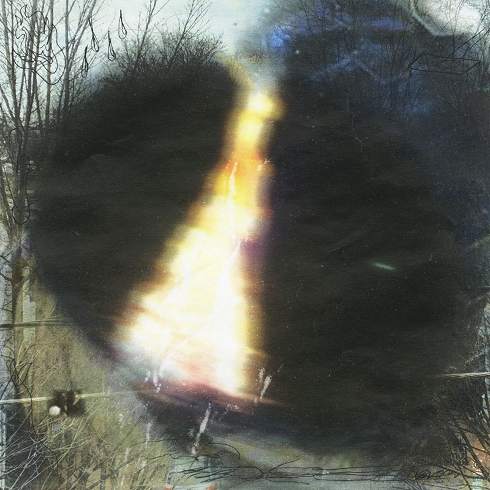
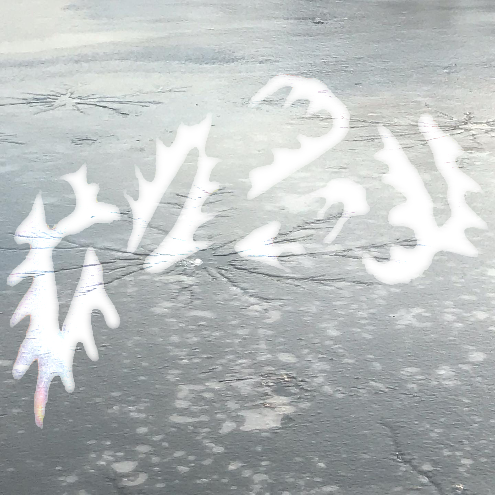

#8 - September 25, 2021
The Dinosaur
Mix by Qiliq
Tracklist:
1. Avre Tu Puerta Carrada — Uri Gincel Trio
2. South—Bugge Wesseltoft
3. Sidonie — Don Ellis
4. Swanee River—Rhee yeu Seuk Guitar Orchestra

#7 - August 04, 2021
Weaving Night
Mix by Bebird
Tracklist:
1. Laraaji - Laraajingle
2. Floating Points - Kara-Lis Coverdale - Moments in Love
3. Yannick Dauby - 咾咕厝 & 山林
4. Kleintierschaukel - Wake Up
5. Roberto Musci - Claudia, Wilhelm R And Me,
6. leafar legov etc,.
(...)
#6 - August 04, 2021
Tower of Babel Elsewhere
Mix by aft MOON & googoomuck
Tracklist:
TRjj - Urania(Time Lecture)
Body - Gia Margarent
Carlos Maria - Blu Terra
Viken Arman - Cosmos in Blue
Geju - Water Elements
Khalab, M’berra Ensemble - Desert Storm
Tomaga - Bluest
关淑怡 - 万物生(Chillout Remix)
祖海 - 天竺少女
The Orb - Alpine Evening
Fitzcarraldo Caruso scambiato per Dio
Ana Roxanne - I’m Every Sparkly Woman
Sepehr, Sahra - Rooz-e Marg(Outro)
Kelsey Lu - I'm Not In Love
Twin Peaks Intro Remastered
 #5 - August 04, 2021
The Little White Cloud That Cried (B)
Mix by Andrew Walsh-Lister
#5 - August 04, 2021
The Little White Cloud That Cried (B)
Mix by Andrew Walsh-Lister
Tracklist:
1. Damon, The Little White Cloud That Cried
2. Tyme, Cry for the Trees
3. Ron Slabe, Soweto Sunrise
4. The Ronettes, Walking in the Rain
5. Bob Lind, Black Night
6. Coldreams, Morning Rain
7. Eliane Radigue, Terre - Eau - Pluie
8. Karen Beth, April Rain
9. The Millionaires, And the Rains Came
10. Dean Ford & The Gaylords, That Lonely Feeling
11. Devine & Statton, In the Rain
12. Berbel Nobodius, Windblown Quiescence
13. Partly Cloudy, Relic Revival
14. RAH Band, Tears + Rain
 #4 - July 04, 2021
The Little White Cloud That Cried (A)
Mix by Andrew Walsh-Lister
#4 - July 04, 2021
The Little White Cloud That Cried (A)
Mix by Andrew Walsh-Lister
Tracklist:
1. Ton Bruynèl, Rain (excerpt)
2. Trade Horne, Here Comes the Rain
3. Ruth White, Mists and Rains
4. Beth Anderson, Ocean Motion Mildew Mind
5. Ariel Kalma, Voltage Controlled Wave
6. The Kasuals, Listen to the Rain
7. Brad Suggs, Cloudy
8. Vorhees, The Bath
9. Toyomitsu Yokota, Comeback Love
10. Helen Shapiro, It Might as Well Rain Until September
11. Sandalwood, Sleepy Rain
12. Sum Sum, Misty Sunset
13. 800 Cherries, Rainy Poppy Field
14. HMV Weather Effects, Wind
15. Jacket Weather, Jacket Weather (casiotone)
16. Lillettes, Air Conditioning
17. Lily Greenham, RRR

#2 - January 17, 2021
A Friend Who Cannot Speak
Mixtape by Yue Xuan
0:00-03:24 Burning Party 03:20-05:12 雨天，忧郁 5:00—09:34 有阳光的房间 09:32-12:08 芽苗之爱 12:08-16:46 Day 3 16:46-21:18 Christmas Eve pt.1 21:18-22:38 Christmas Eve pt.2 22:31-27:13 旧朋友 27:08-30:12 一个女孩的梦
#1 - November 15, 2020
Everyday Life
Mix by Lauren Graycar
Tracklist: 1 - Libera, In Dulci Jubilo 2 - Erik Satie, Petite ouverture à danser, performed by Reinbert de Leeuw 3 - Fritz Kreisler, Aubade Provençale in the Style of Couperin, performed by Itzhak Perlman 4 - Arcangelo Corelli, Violin
Sonata in D minor, Op.5 No.12 'La Folia,' performed by Arthur Grumiaux 5 - Franz Schubert, Impromptu in G flat major D899 No.3, performed by Vladimir Horowitz 6 - Saint Etienne, Mario's Cafe 7 - Suede, Lonely Girls 8 - April, Oh! My
Mistake 9 - Oval, Photograph 10 - Sarah Cracknell, Penthouse Girl, Basement Boy 11 - 赵方婧, 芒种 12 - BTS, Moon 13 - Suede, The Chemistry Between Us 14 - 允兒, 小幸運 15 - John Lennon, Real Love (take 4) 16 - Saint Etienne, Bedfordshire

#0 - November 26, 2020
Prelude & Circular Fragments
Mix by aft MOON & googoomuck
Tracklist:
01. David Rothenberg, Lembe Lokk, Sanna Salmenkallio - The Boori Sound (feat. Lembe Lokk & Sanna Salmenkallio)
02. Ibu Selva - Queimada
03. Clark - Forebode Knocker
04. 33EMYBW - A Lighter Dream
05. 横田进 - Purple Rose Minuet
06. Ólafur Arnalds, Nils Frahm - 00/26 (Ryan Davis Rethink)
07. Donato Dozzy, Anna Caragnano - Parola (Rework)
08. Pauline Oliveros - Bye Bye Butterfly
09. doon kanda - Nastasya
10. Jay Daniel - Paradise Valley
11. Ondo Fudd - Eyes Glide Through the Oxide
12. Tanya Tagaq - Snowblind
13. 鈴木良雄 - The Mirage
14. 邓丽君 - つぐない
15. Aphex Twin - #3